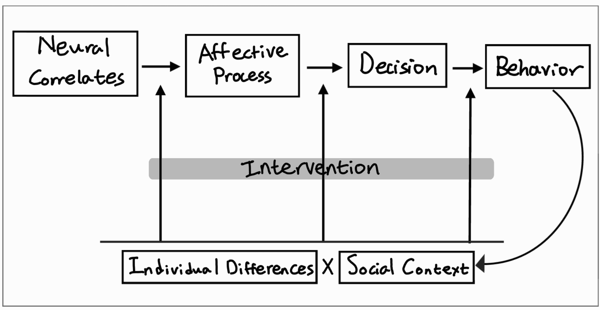

What drives individuals’ decisions? Why do some people choose to help others even at personal cost? My research focuses on 1) the role of affective process in decision making, 2) the influence of social context on these processes, and 3) the principles underlying prosocial behavior.

When facing a particular situation, people perceive and interpret it in different ways. Emotions, whether recognized in oneself or perceived in others, are immediate yet powerful forces that shape subsequent cognitive processes. Individual differences in affective process therefore contribute to variability in decision making. My aim is to clarify the role of affective process, with the potential to inform effective interventions. Research on psychological traits, neural characteristics, and social factors can further explain the mechanisms underlying such individual variation.
If personal characteristics shape how people interpret situations, these interpretations are further conditioned by the broader societal forces in which they are embedded. How does social context interact with person-level factors to influence the way people decide? I am particularly interested in societal reward systems or emerging sociotechnical environments shaped by technological development, such as algorithms in digital media. Research in this area could clarify what amplifies biased perception and drives changes in decision-making processes.
Achieving sustainable development requires not only technological advances but also the cumulative impact of human decisions. Prosocial choices may provide critical insights into this challenge. My long-term goal is to contribute to social systems that foster prosocial behavior by developing theory-based strategies. This requires a refined understanding of decision-making processes as moderated by individual differences and social structures. Ultimately, clarifying these mechanisms can help bridge fundamental theory with applied strategies, informing the design of systems that promote cooperative and sustainable decision-making.